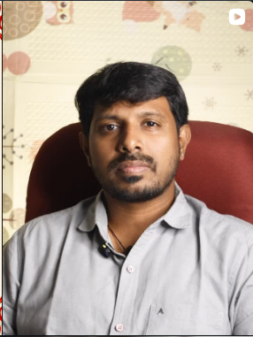

நாளங்கள் நலமாக்கப்படும்.
Dr. Srinivasan is a vascular surgeon in Theni who specializes in saving limbs from amputation, treating varicose veins, and healing diabetic foot conditions. Over 500 patients have kept their limbs through vascular care at Jeeva Clinic.

Dr. Srinivasan
Vascular & Diabetic Foot Surgeon
About Dr. Srinivasan
Dr. Srinivasan has been practicing vascular surgery for over 15 years at Jeeva Clinic in Theni. His focus has always been on one principle: explore every possibility before considering amputation.
Many patients come to him after being told elsewhere that amputation is their only option. In a significant number of these cases, vascular reconstruction, angioplasty, or proper wound management has been able to save the limb.
He treats patients with diabetic foot complications, varicose veins, peripheral arterial disease, deep vein thrombosis, and non-healing wounds. He believes in explaining every condition and treatment option clearly, so patients and their families can make informed decisions.
Over 15 years of practice. More than 500 limbs saved from amputation. Trusted by over 5,000 patients across Theni, Madurai, Dindigul, and surrounding districts.
Conditions We Treat
If any of these sound familiar, a consultation can help clarify your options. Many conditions are treatable when caught early.
Non-healing ulcers, blackened toes, numbness, or infections in the feet. If you have diabetes and notice any changes in your feet, early treatment is critical.
Common in: Diabetes patients over 50
Swollen, twisted veins visible under the skin, often with pain, heaviness, or itching in the legs. Modern treatments are minimally invasive with quick recovery.
Treated with: Laser, Sclerotherapy, RF ablation
Pain, cramping, or tiredness in the legs during walking that goes away with rest. This is often a sign of Peripheral Arterial Disease (blocked arteries in the legs).
Diagnosis: Doppler ultrasound, ABI test
Wounds on the legs or feet that have not healed for weeks or months despite treatment. Poor blood circulation is often the underlying cause.
Often linked to: Diabetes, arterial disease
If another doctor has recommended amputation, it is worth getting a second opinion. In many cases, vascular surgery can restore blood flow and save the limb.
Seek: A vascular surgeon's evaluation first
Persistent swelling, skin discoloration, or heaviness in the legs can indicate Deep Vein Thrombosis or chronic venous insufficiency. Early screening helps prevent complications.
Screening: Doppler ultrasound
Patient Stories
These are real experiences from patients treated at Jeeva Clinic. Watch their stories or read their words below.
Patient Recovery
Diabetic foot treatment
Varicose Veins Treatment
Before and after
Limb Saved from Amputation
Vascular reconstruction
I was told at two hospitals that my foot would need to be amputated. A relative suggested Dr. Srinivasan. He examined me carefully, explained the vascular procedure, and saved my foot. I walk to the temple every morning now.
Rajesh
Diabetic foot patient, Theni
My varicose veins had been painful for three years. I was afraid of surgery. Doctor explained it would be done with laser and I could go home the same day. The pain is completely gone now.
Selvi
Varicose veins patient, Madurai
My father had a wound on his foot that would not heal for six months. Doctors near us did not know what to do. Dr. Srinivasan identified the blood flow problem and treated it. The wound healed fully in two months.
Kumar
Son of patient, Dindigul
I travelled from Madurai because someone in my family had been treated here before. The clinic is clean, the staff is kind, and the doctor takes time to explain everything. My leg pain has reduced significantly after treatment.
Vijay
PAD patient, Madurai
Your First Visit
Book your appointment
Call the clinic or send a WhatsApp message with your preferred date and time. We will confirm your slot.
Bring your medical records
If you have previous test reports, prescriptions, or scans, please bring them. This helps the doctor understand your history quickly.
Consultation and examination
Dr. Srinivasan will examine you, may perform a Doppler ultrasound if needed, and explain the findings and treatment options clearly.
Clear treatment plan
You will leave with a clear understanding of your condition, the recommended treatment, expected timeline, and costs. No pressure, no rush.
Common Questions
Diabetic foot occurs when diabetes damages nerves and blood vessels in the feet. This leads to loss of sensation, ulcers, and infections. Without proper blood flow, wounds do not heal and can lead to gangrene. Early vascular assessment and treatment can prevent these complications and save the limb.
Yes. Modern treatments like endovenous laser ablation, radiofrequency ablation, and sclerotherapy are minimally invasive. Most patients go home the same day with minimal discomfort. The approach depends on the severity of the condition, which is assessed during consultation.
In many cases, yes. If blood flow to the affected limb can be restored through angioplasty, stenting, or bypass surgery, the tissue can heal. The key is early consultation with a vascular surgeon. The sooner the blood flow is assessed, the better the chances of saving the limb.
Many patients travel from Madurai, Dindigul, Cumbum, and other districts for treatment. For complex cases, a vascular surgeon's evaluation can make a significant difference in outcomes. You can send your reports via WhatsApp for an initial assessment before visiting.
Bring any previous medical reports, blood test results, scans, and a list of medications you are currently taking. If you have diabetes, bring your recent HbA1c and sugar level reports. This helps the doctor assess your condition faster.
Contact
Address
Edamal Street, Opp to Nadar Saraswathy School,
Theni, Tamil Nadu 625531
Phone
+91 99625 05662Clinic Hours
Monday - Saturday: 10:00 AM - 1:00 PM, 5:00 PM - 8:00 PM
Sunday: By appointment only